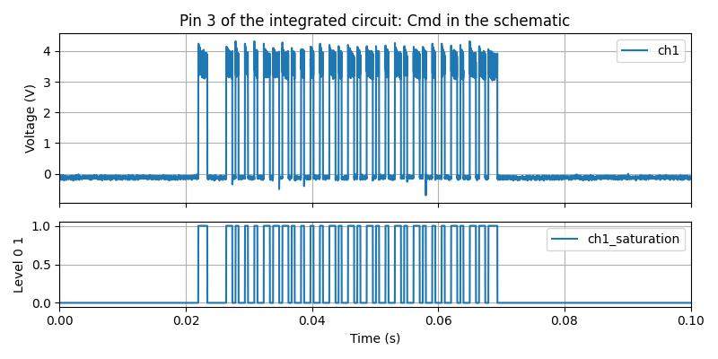
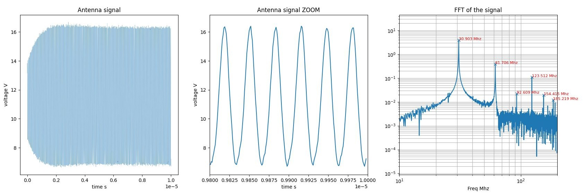
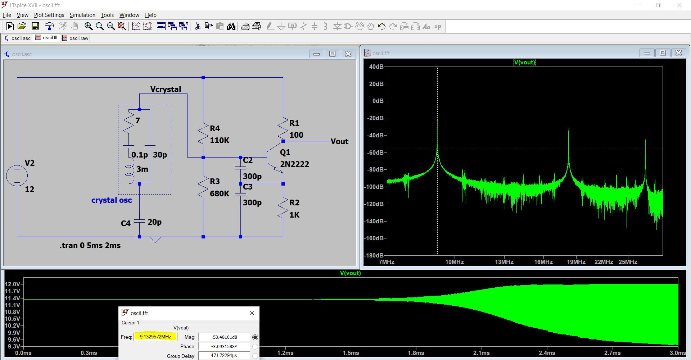

.jpg)
.jpg)
Cost of the product; around 30 euros, Date: 07/12/2024
Ref of the product:
Nice PROTECT 2000
01.34.61.20.48
OMOLOGA PIT APRIPORTE
Mod. Bio
Freq. 30,875Mhz
Pot. 100µW
.jpg)
The integrated circuit IC:
MOTOROLA NICE COD 003 2E30A XLAA9810
I'm not sure 100% about the schematic (Particulary the oscillator)
Tp1, Tp2, Tp3, Tp4: Test points
The measurement of V5 is around 4.5V
End: Enable, Cmd: Command, Nc: Note connected
.jpg)
.jpg)
Measurement of the pin3 of the integrated circuit (Cmd in the schematic)
Full signal
Saturating the signal to see the sended code
.jpg)
.jpg)
Measurement of the antenna transistor (MeasE in the schematic)
carrier signal
carrier signal and the other harmonics
.jpg)
.jpg)
.jpg)
.jpg)
In this section, we will use python to post processing the oscilloscope measurements
To download the notebook file: postProcessing.ipynb

The bit time 480µs (around 2083bps)
The transmitted code time 47.38ms
The numeric transmitted code
111000000110100100100110110110100100100100110100110100110100100110100110100100100110100110110111
FFT of the signal: we can see the carrier 30.903Mhz, and the harmonics 61.706Mhz, 92.609Mhz ...
To download the ltspice file: LTSPICE FILE
